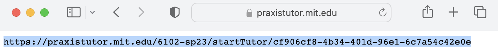

Getting Started
6.102 requires you to get up to speed quickly. This page helps you set up your software development environment.
If you have any questions, or any trouble following the instructions below, please ask for help.
Install Node
Go to the Node.js Downloads page, and then:
for Linux: click on “Installing Node.js via package manager” at the bottom of the page, and find the appropriate package for your Linux flavor
- for Arch Linux: the suggested
nodejspackage is the “Current” version of Node, which is not what you want; find and install an appropriatenodejs-ltspackage instead
- for Arch Linux: the suggested
Make sure you install the LTS version of Node, version 24.x.y. Do not install the “Current” version, it’s a bleeding-edge development version that is not supported long-term.
- If you already had an older version of Node installed, the installer will replace it with Node 24. If you need to keep an older version of Node installed because of some other project you work on, then please use nvm to manage multiple Node versions, so that you are using Node version 24 for this class.
If the installer asks questions during installation, you can accept the default choices and just click Next.
Note that these questions don’t keep track of what you’ve previously entered. When you reload the page, all the questions reset themselves.
After the semester begins, if you’re a registered student, you will be able see your answers by looking at Omnivore.
Install TypeScript
After installing Node, open your terminal or command prompt, and run:
You may see a warning that “a new version of npm is available,” which you can ignore.
Install Visual Studio Code
Visual Studio Code is an open-source programming editor that supports a wide variety of programming languages (not just TypeScript). You have to install it because 6.102 has several tools that are designed as extensions to Visual Studio Code (specifically Praxis Tutor and Constellation, installed later on this page). Although you are welcome to use a different editor for 6.102 work, you will need to have VS Code installed in order to use Praxis Tutor and Constellation.
Go to the Visual Studio Code download page, and download and install the appropriate installer for your platform.
- If you would rather install VSCodium, that will work too.
- If the installer asks questions during installation, you can accept the default choices and just click Next.
If you already have Visual Studio Code or VSCodium installed, you don’t need to reinstall it, just make sure it’s up to date by following the instructions below.
Make sure that you have the latest version installed. Run Visual Studio Code, and either:
- macOS: Code → Check for Updates… (or Restart to Update)
- Windows/Linux: Help → Check for Updates… (or Restart to Update)
It should either say “No updates available”, or help you update to the latest version.
reading exercises
Find out which version of Visual Studio Code you are running:
- Windows/Linux: Help → About
- macOS: Code → About Visual Studio Code
- VSCodium on macOS: VSCodium → About VSCodium
The first line of the dialog box is the version number. It should take the form “x.y.z” for some numbers x, y, z. Enter it below.
(missing explanation)
Install Praxis Tutor
Praxis Tutor is 6.102’s tool for learning the syntax and semantics of TypeScript.
Download the Praxis Tutor extension, which will save to your laptop as a file called
praxis.vsix.In the upper right corner of the Extensions pane that appears, click on
..., then Install from VSIX…, then find and install thepraxis.vsixfile you just downloaded.Go to View → Command Palette, search for
praxis, and click on Explorer: Focus on Praxis Tutor View. You should see a PRAXIS TUTOR pane appear in the lefthand sidebar. The Tutor pane may be showing an error message like “No such tutor” or “The Tutor doesn’t know who you are”. That’s fine, you still have to configure it using the next few steps.-
- Windows/Linux: File → Preferences → Settings
- macOS: Code → Settings… → Settings
- if you installed VSCodium, look for
VSCodiumin the menubar, notCode. - in macOS versions 12 and earlier, look for
Preferencesin the first menu, notSettings
- if you installed VSCodium, look for
The Settings panel has a search box at the top. Search for
praxisand it should display only the settings for Praxis Tutor.
In the box labeled
Location: Personal Link, copy and paste your personal start URL.
You should see the Praxis Tutor immediately reload and show a page with “Basic TypeScript” at the top, which means it’s ready for use.
Install Constellation
Constellation is 6.102’s system for working on in-class programming exercises with a partner.
Download the Constellation extension,
constellation-vscode-0.4.8.vsix.In VS Code, go to View → Extensions, click on
..., then Install from VSIX…, and selectconstellation-vscode-0.4.8.vsix.Go to View → Command Palette, which brings up a search box that allows you to find and run any command in VS Code. Type “set up constellation” and select Set up Constellation.
If a window with “Do you want Code to open the external website” appears, click Configure Trusted Domains and Trust https://constellation.mit.edu.
Windows/Linux: if it fails with the error “certificate has expired,” open the VS Code Settings panel again and search for
systemcertificates. Un-check the Http: System Certificates option, then restart VS Code and try again.
Your web browser should open a Constellation page that requires MIT Touchstone login. Click the red Go! button.
After following the prompts, you should see a “successfully authenticated and connected” notification in VS Code to confirm that Constellation is ready to use.
Install Git
You may already have Git installed. If so, you may not need to install the latest version.
If you don’t already have Git and need to install it: go to the Git project page and follow the link on the right side to download the installer for your platform.
- use Git from the Windows command prompt,
- checkout Windows-style, commit UNIX-style line endings, and
- add a shortcut to the Desktop
reading exercises
Find out which version of Git you are running.
- on macOS and Linux, open the Terminal application.
- on Windows, open Git Bash.
- Don’t use the Windows Command Prompt, and don’t use Windows Subsystem for Linux.
git --versionEnter your Git version below. It should take the form “x.y.z” for some numbers x, y, z.
(missing explanation)
Set up Git and github.mit.edu
We will use Git from the command line, so make sure that’s where you are for this section, and whenever you use Git in this class:
- on macOS and Linux, open the Terminal application.
- on Windows, open Git Bash.
- Don’t use the Windows Command Prompt, and don’t use Windows Subsystem for Linux.
Configure npm to use Git Bash (Windows only)
If you are using Windows, run the following command so that your npm command will be able to build problem sets:
npm config set script-shell "C:\\Program Files\\git\\bin\\bash.exe"Important: use copy-and-paste to put this command into your Git Bash terminal, don’t retype it. The normal Ctrl-V paste shortcut may not work in Git Bash by default, so try using the right-click menu and choose Paste.
Set preferences
Before using Git, we’ll do some required setup and make it behave a little nicer.
-
git config --global user.name "Your Name" git config --global user.email username@mit.edu # or any email address that reaches youYou don’t necessarily have to use your MIT email address here; it just needs to be an email address that reaches you.
-
Every Git commit has a descriptive message, called the commit message. By default, Git uses a popular but rather tricky editor called
Vimto edit these messages. If you’ve never used Vim, we recommend that you use Visual Studio Code as your commit message editor instead.First make sure that your VS Code is configured to start from the command line, by running:
code(or
codiumif you installed VS Codium instead of VS Code).Visual Studio Code or VSCodium should pop up. If you instead get an error message, run VS Code, configure it to launch from the command line, close and reopen your terminal, and try running
codeorcodiumagain.Now configure git’s commit editor:
git config --global core.editor "code --wait"- If you installed VS Codium, then use
"codium --wait"in the command instead. - You are also welcome to stick with Vim if you already know how to use it, or to configure any other editor you’re more comfortable with.
- If you installed VS Codium, then use
-
git logis a command for looking at the history of your repository.To create a special version of
git logthat summarizes the history of your repo, let’s create agit lolalias using the command (all on one line):git config --global alias.lol "log --graph --oneline --decorate --color --all"Now, in any repository you can use:
git lol
reading exercises
To confirm that you set up Git properly, run
git config --listFind the line that starts with alias.lol. (It only shows one screenful at a time, so you may need to resize your window or press Space or Down Arrow to see more of the output. Quit the output viewer by pressing q.)
Copy and paste just that line in the box below. (If you are on Windows, then you may need to use the right-click menu to copy from Git Bash, rather than the usual Ctrl-C shortcut.)
(missing explanation)
Connect to github.mit.edu
Visit github.mit.edu and log in.
GitHub (at github.com) is a popular site for hosting remote Git repositories. MIT’s GitHub Enterprise site (at github.mit.edu) runs the same software, but you log in with your MIT account.
Your problem set and project repositories for 6.102 will be stored on github.mit.edu.
Follow the GitHub Enterprise instructions to set up SSH:
Generate a SSH key if you don’t have one
Add the SSH key to your account – make sure you are working on github.mit.edu, not
github.com
reading exercises
To confirm that you set up your github.mit.edu connection properly, follow the instructions to test the SSH connection, where:
- the hostname is
github.mit.edu - the correct host key fingerprints are in the IS&T KB
A successful connection will display a one-line welcome message and then exit. Copy and paste the one-line welcome message here:
(missing explanation)
Prepare for class
Authenticate to websites
We will use several websites in class, so it will save you time if you visit them now, using the web browser and laptop you will be using in class. You can get authentication out of the way, and cache some of the websites in your browser, so that it will be much faster to open the sites at classtime.
Please click on and authenticate yourself to each of these sites:
clicker.mit.edu is for short-answer questions during class. After you authenticate, you should see “6.102 Clicker” and a welcome message with your username.
quiz.mit.edu is the site we will use for nanoquizzes and exams. After you authenticate, you should see “Pulsar / online quizzes”, and your username should be in the upper right corner.
caesar.mit.edu is the site we will use for code reviewing. After you authenticate, you should see a welcome message, and your username should be in the upper right corner.
Test Constellation
In class, we will do pair-programming exercises that require using Git to get the code, and Visual Studio Code and Constellation to edit it collaboratively with your partner.
Try out the workflow for starting a programming exercise now.
- If you know somebody else in the class, please do this together.
- If you don’t know anybody, just try it by yourself for now. You should be able to do everything up to the last step (connecting with a partner).
Go to the sample programming exercise and follow its directions to get the code, open it in VS Code, and prepare to start collaborating with Constellation.
Pause before the last step, and enter your joincode here.
If you are doing this test solo, then you can stop after getting the joincode, and cancel the collaboration in Visual Studio Code. During class, you will be able to find a partner to work on the exercises.
If you are doing this test with somebody else, then enter each other’s joincodes as instructed.
You should now be connected to each other.
If you both open the same file (say, cumulative-avg.py) in VS Code, you should be able to see each other’s edits in real time.
This is how you will work on the exercises during class.
But for now, you don’t need to do anything more with this sample exercise.
If you paired with a partner, you can disconnect by clicking Stop Collaborating at the bottom of VS Code window.